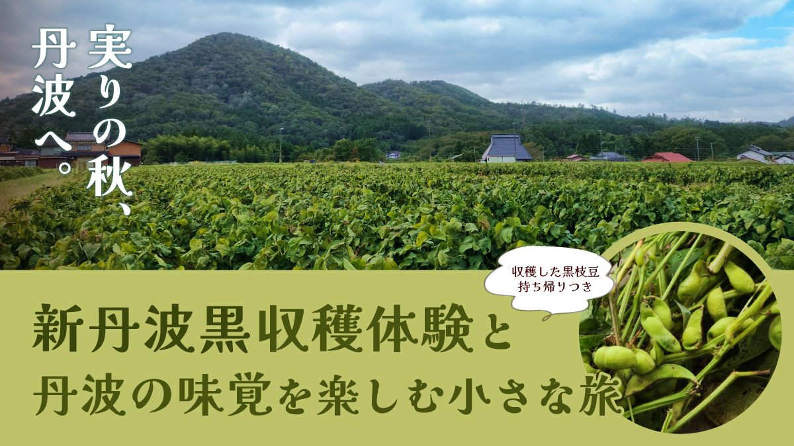
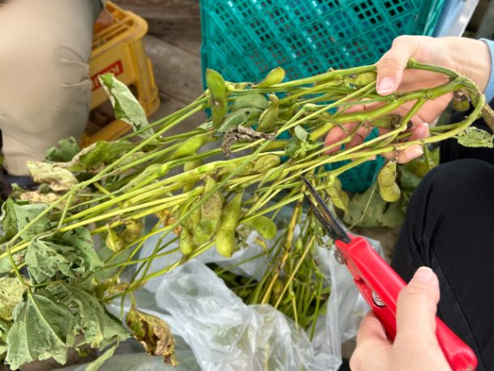
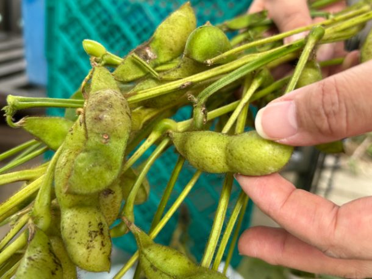
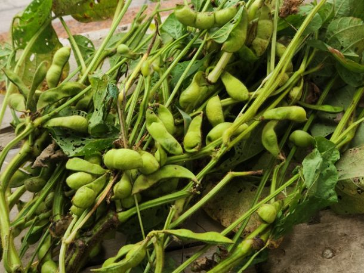
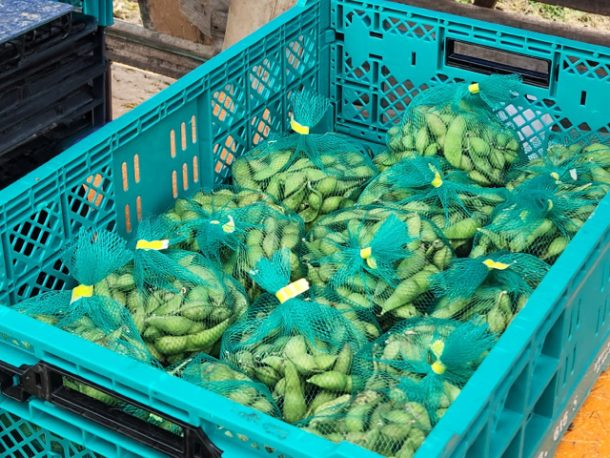
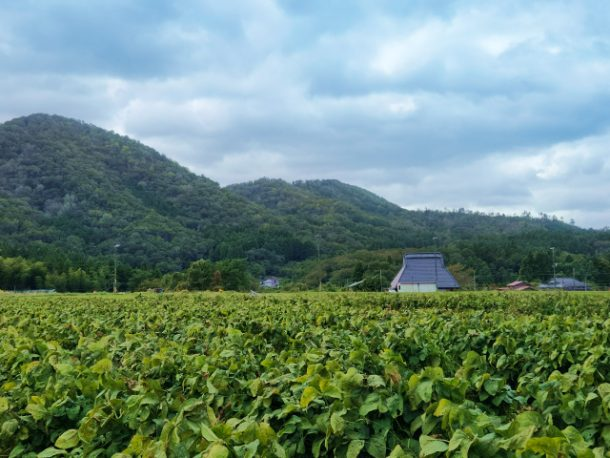
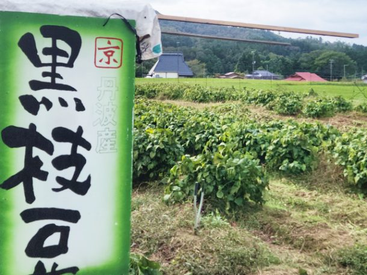

最新の情報は 公式サイトのツアーページ をご覧ください。
実りの秋、丹波へ。～「新丹波黒」収穫体験と丹波の味覚を楽しむ小さな旅～

※大人・子ども同額
本ツアーの募集は終了いたしました
＜お問合せフォームはこちら▶＞
＜MKトラベルTOPはこちら▶＞
＜おすすめツアー一覧はこちら▶＞
実りの秋、丹波へ。
「新丹波黒」は、京都府で選抜・育成された、大粒で味わい豊かな黒大豆の品種。
秋のわずかな期間だけ「黒枝豆」として収穫される、季節限定の味覚です。
サヤに黒い斑点（茶しみ）が出てくるころが、甘みとコクが増しておいしくなるタイミング。
そんな食べごろの黒枝豆を、実際に畑で自分の手で収穫します。
収穫した新丹波黒は、お土産としてお持ち帰りいただけます♪
自分で収穫したからこそ、家に帰ってから味わうのも楽しみのひとつです。
収穫体験のあとは、丹波の味覚を楽しむ昼食や丹波ワイン、道の駅でのお買い物へ。
さらに、昔ながらの木造校舎を活用した「質美笑楽講」にも立ち寄ります。
見て、触れて、収穫して、味わう。
秋の丹波ならではの“実りのよろこび”を楽しむ、小さな旅へ出かけませんか？
| 🌟おすすめポイント |
| 🍁秋のわずかな期間だけ！「新丹波黒」を自分で収穫体験。 京都府で選抜・育成された「新丹波黒」は、大粒で味わい豊かな黒大豆。 秋の短い期間だけ楽しめる黒枝豆を、実際に畑で収穫します。 普段なかなかできない、季節ならではの体験をお楽しみください。 |
| 🛍収穫した「新丹波黒」はお土産に♪ 自分の手で収穫した黒枝豆は、そのままお持ち帰りいただけます。 旅の思い出と一緒に、ご自宅でも丹波の秋の味覚をお楽しみください。 |
行程
| 時間 | 場所 |
| 9:30 | 京都駅八条口MKタクシーのりば |
| 11:00 | 尾長野 |
| 12:15 | 八光亭 |
| 13:20 | 京都丹波ワイン |
| 13:50 | 道の駅 瑞穂の里さらびき |
| 14:20 | 質美笑楽講 |
| 16:00頃 | 京都駅 |
※渋滞等で、予定通りの滞在時間をお取りすることができない場合がございます。予めご了承ください。
※歩きやすい服装、履物でご参加ください。
※軍手や雨具等の貸出はございません。


-

-



【MKトラベルLINE公式アカウント】
MKトラベルの新規ツアー情報をLINEでお届けいたします

【各SNSでも京都の情報やツアー情報をお届けしています】


旅行条件
| ツアー番号 | T355MK |
| 出発地 | 京都市内 |
| 添乗員／ガイド | 添乗員：なし（乗務員がその業務を代行いたします） |
| 食事 | あり |
| 最少催行人数 | 6名 |
お申込みについてのご注意
※最少催行人数は6名様です。最少催行人員に満たない場合は、旅行の実施を取りやめることがあります。出発の14日前にその旨をご連絡し、お客様から当社がお預かりしている旅行費用の全額をお返しいたします。
※旅行条件・旅行代金は、2026年9月1日現在を基準としています。
※行程および帰着時間は交通事情などにより変更になる場合があります。
※お申込みの前に弊社の募集型企画旅行規約をご確認ください。
よくある質問
新丹波黒に関してQ.新丹波黒とは何ですか？
A.丹波黒大豆の最高級品種から生まれた枝豆。
大粒で甘みがあり、味や香りがよいのはもちろんカルシウムやビタミン、たんぱく質も多く含んだ健康にもよい逸品です。
Q.丹波黒とは何が違いますか？
A.「丹波黒」は丹波で作られてきた丹波黒大豆の総称です。
「新丹波黒」はその中から優良種の選抜を行い、より優れた系統を選抜して育成した品種です。
Q.普通の枝豆・大豆とは何が違いますか？
A.「新丹波黒」は普通の枝豆より大粒で、栗のような触感が特徴です。
また、寒暖差の激しい盆地でじっくり育てるため糖度や栄養価が高く、アントシアニンやビタミンE、食物繊維も普通の大豆より多い傾向にあります。
Q.収穫時期（旬）はいつですか？
A.10月初旬から10月下旬までのわずかな期間に収穫を行います。
1年のうちわずか2～3週間しか味わえないため、幻の枝豆とも言われています。
収穫時期により味わいの異なる「新丹波黒」ですが、本ツアーでは甘み・旨みがしっかり出てきた頃の新丹波黒を収穫します。
Q.サヤの黒い斑点は傷みではありませんか？
A.「新丹波黒」の黒い斑点は傷みではなく、豆が熟成して甘みと旨みが増している証です。
Q.収穫した新丹波黒は持ち帰れますか？
A.はい、自分で収穫したものをそのままお持ち帰りいただけます。
Q.どんな服装・靴がおすすめですか？
A.実際に畑にて収穫体験を行っていただきますので、動きやすく、汚れてもよい服での参加をおすすめしております。
また、軍手や雨具の貸出はございませんので、手の汚れや天候が気になる方は軍手やカッパをご持参ください。
Q.1名ですが、申し込みできますか？
A.はい。お一人参加の方もたくさんいらっしゃいますので、お気軽にお申し込みください。
Q.参加したかったけど、日程が合いません／終了していました
A.貸切で再現できる場合もございますのでご相談ください。お問合せフォームはこちら
Q. 雨天でも催行しますか？
A.はい。雨が見込まれる日は、安全のため滑りにくい靴でご参加ください。
本ツアーの募集は終了いたしました
＜お問合せフォームはこちら▶＞
＜MKトラベルTOPはこちら▶＞
＜おすすめツアー一覧はこちら▶＞
【WEBシステムよりご予約の場合】
・クレジットカード決済
・コンビニ決済
お支払方法詳細はこちら
お客様のご都合でご予約をキャンセルされる場合は、すみやかに下記お問合せ先までご連絡ください。
キャンセル料
11日目に当たる日以前
無料
10日目に当たる日以降
20%
7日目に当たる日以降
30%
旅行開始日の前日
40%
旅行開始日の当日
50%
旅行開始後又は無連絡
100%